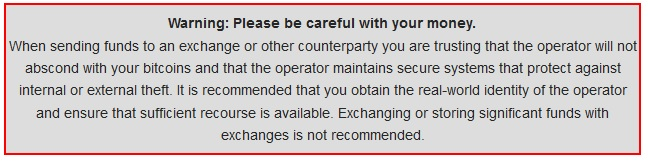

There are basically 3 possibility.
Exchanging bitcoins for other forms of currency brings up some issues regarding chargeback fraud.
Specifically, payment methods such as credit cards, and PayPal, can be reversed up to 90 days after
the transaction took place. In contrast, bitcoin is a "hard currency", once you spend bitcoins,
you cannot get them back by 'pulling' from your side.
An extra word of caution from the [ Bitcoin Wiki ]
